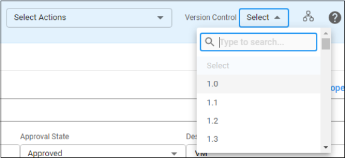
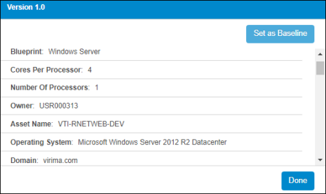
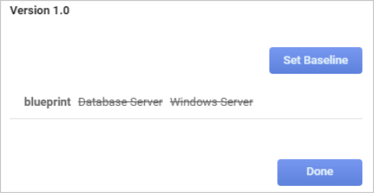

Version Control
The versioning of a CI starts from Production status and thereafter increments the version by 0.1 when changes are made in the CI.
Below are the conditions that version a CI:
Changing one or more property values of a CI.
Adding a New Property.
Adding a New CI component for example: adding a Software Instance or a Network Adapter etc.
Removing a component from a CI.
If the first two conditions (mentioned above) happen for any of the CI components, the system versions the CI Component and the CI.
|
You cannot set a version as a baseline which was versioned due to one of its components. When a version is set as the baseline, for example, marked as stable and for this version, a snapshot is created that can be used as a revert to version. |
| 1. | Click the drop-down list and choose a version. |

A window displays with the current asset information.


| 2. | To set this version as the baseline, click Set as Baseline. |
| 3. | Click Done. |
Related Topics